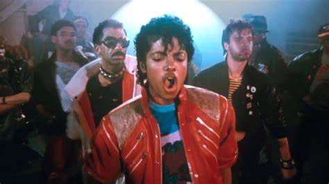
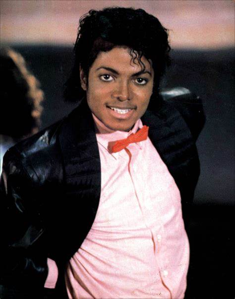
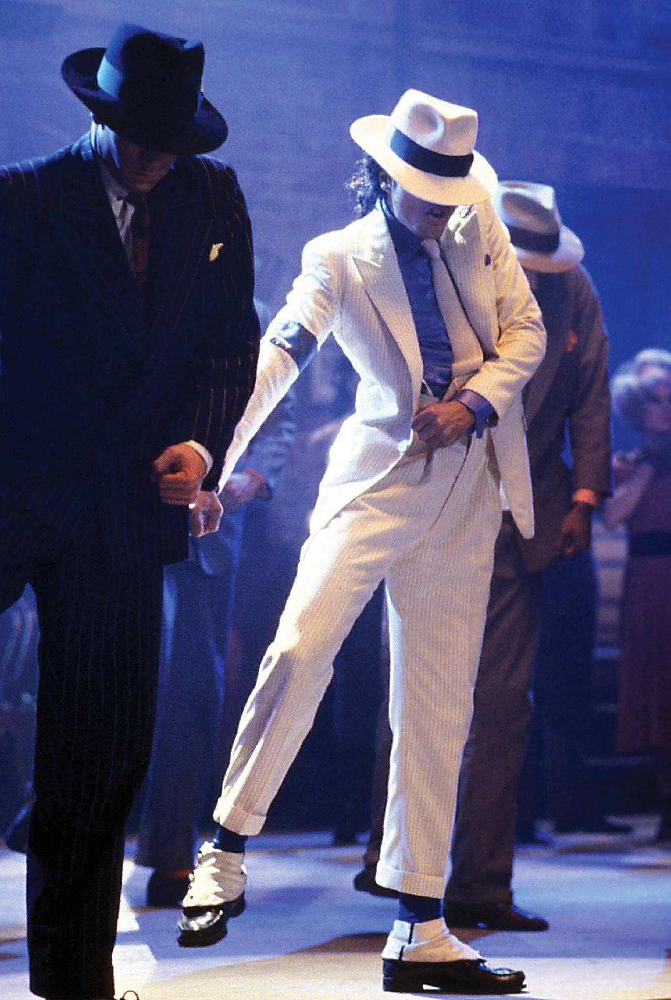

fue la primera gira musical en solitario del artista estadounidense Michael Jackson, lanzada en apoyo de su séptimo álbum de estudio, Bad (1987). Patrocinada por Pepsi y abarcando más de 1 año, la gira incluyó 123 conciertos a 4,4 millones de aficionados en 15 países, lo que la convierte en la segunda gira de recaudación más alta de la década de 1980.
Las mejores canciones de Michael Jackson
Beat It: En los años que precedían directamente a esta canción, Jackson había compuesto ya varias de sus canciones. Su álbum Off the Wall, lanzado en 1979 y producido por Quincy Jones, incorporaba dos de sus composiciones: “Don't Stop 'til You Get Enough" y “Working Day and Night”, así como un tercero coescrito con Louis Johnson, “Get On The Floor”.

Thriller: «Thriller» es una canción interpretada y coeditada por el cantante estadounidense Michael Jackson, compuesta por Rod Temperton y producida por Quincy Jones.1 Es el séptimo y último sencillo de su sexto álbum de estudio, Thriller. Se lanzó el 23 de enero de 1984 a través del sello Epic.
Billie Jean: «Billie Jean» es una canción del cantante estadounidense Michael Jackson, lanzada por Epic Records el 2 de enero de 1983, como el segundo sencillo del sexto álbum de estudio de Jackson, Thriller (1982).

Smooth Criminal: «Smooth Criminal» es una canción interpretada, escrita y coproducida por el cantante estadounidense Michael Jackson, incluida en su séptimo álbum de estudio, Bad (1987) La compañía discográfica Epic Records la publicó el 14 de noviembre de 1988 como el séptimo sencillo del disco.1 Posteriormente figuró en sus discos de grandes éxitos Number Ones, The Essential Michael Jackson, The Ultimate Collection, King of Pop, This Is It, e Immortal.

Black Or White: "Black or White" fue el primer sencillo extraído del álbum Dangerous de Michael Jackson, lanzado el 11 de octubre de 1991. El sencillo es considerado la canción de rock de mayor venta en la década de los años 1990. "Black or White" es una mezcla de hard rock, dance y rap, pero básicamente es una canción de pop rock similar a "Beat It".